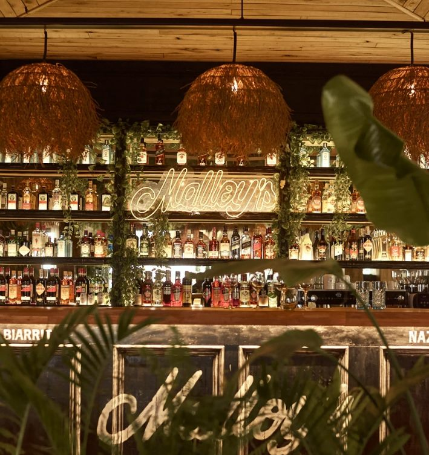
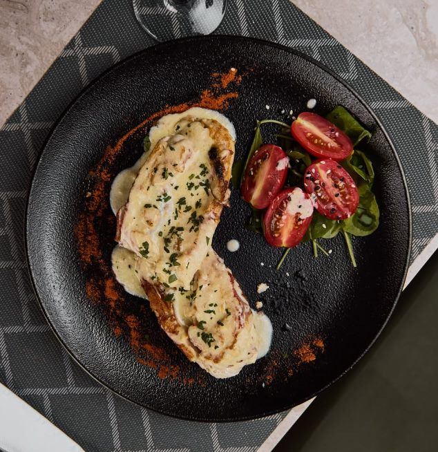
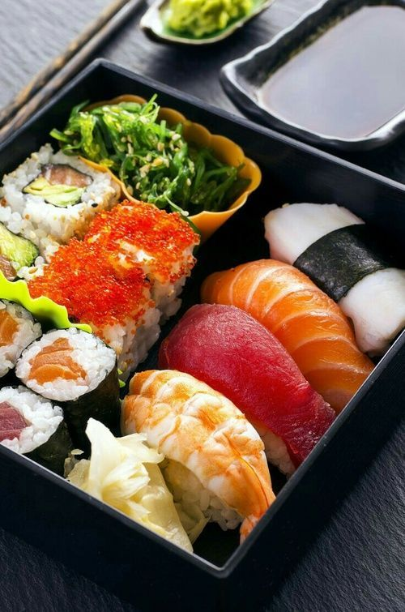
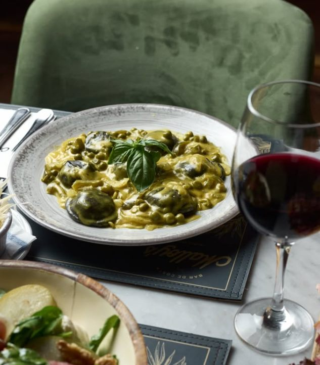
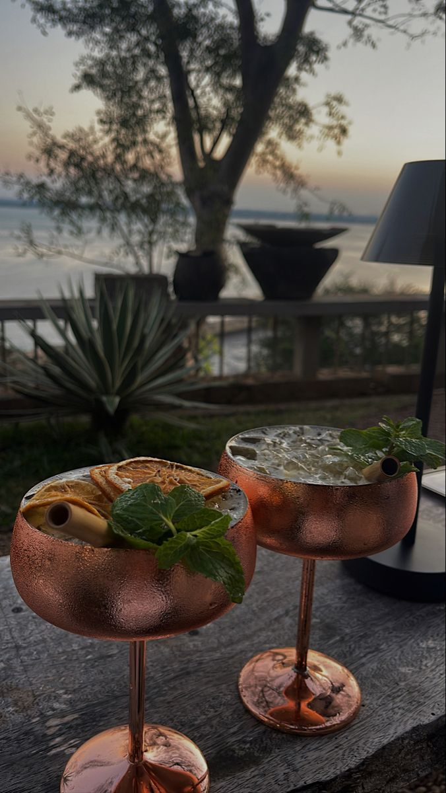
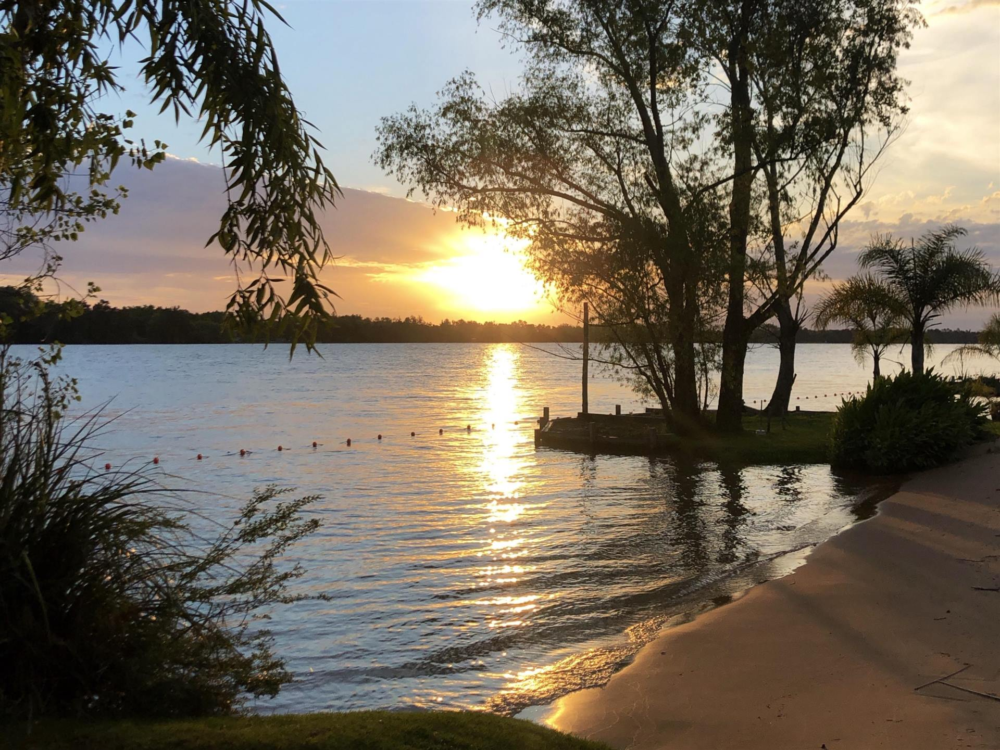

Bienvenidos a Malloy's
Disfrutá de la mejor gastronomía y coctelería frente al río. Un espacio único en Bajo San Isidro para desconectar y vivir momentos inolvidables.
Descubrí la magia de nuestros decks de madera que se extienden sobre el río, creando el escenario perfecto para una tarde inolvidable bajo la sombra de las palmeras.
Nuestros atardeceres son legendarios, tiñendo el cielo de colores cálidos mientras disfrutás de la brisa ribereña en un ambiente sofisticado y relajado.
Acompañá el momento con nuestra coctelería de autor, diseñada para refrescar tus sentidos con ingredientes locales y técnicas internacionales.


Ojo de bife y costillar al horno

Rolls tradicionales y especiales

Cocina italiana casera

Tragos frente al río

"La vista al río es inmejorable, ideal para ir al atardecer. Las porciones son súper abundantes y el ambiente es muy relajado. ¡Volveremos!"
"Excelente lugar en San Isidro. La comida es riquísima y el servicio muy atento. El deck sobre el agua te hace sentir de vacaciones."
"Un clásico que nunca falla. Los tragos de autor son increíbles y la comida a las brasas es de otro nivel. Muy recomendado para grupos."
Disfrutá de la mejor gastronomía y coctelería frente al río. Un espacio único en Bajo San Isidro para desconectar y vivir momentos inolvidables.